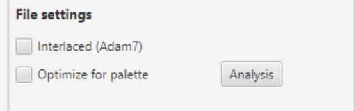
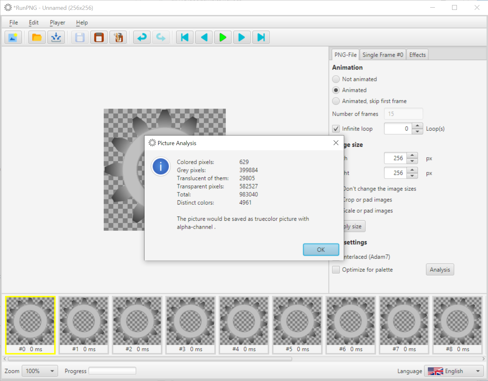
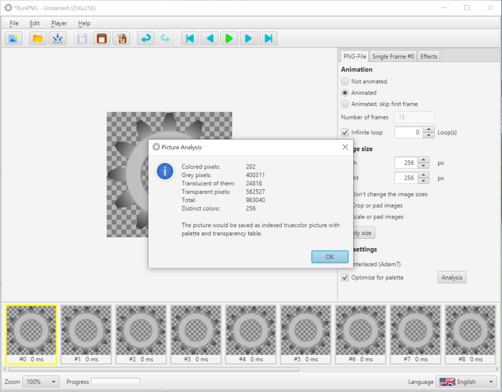

Optimization of Frames
Optimization? For What?
Storage space and transfer times for images are still an issue, even if we now have storage capacities and transfer rates that we in earlier times did not dare to dream of. But there is no reason to waste that if it can be avoided with clever algorithms. It still makes a difference to drag 20 images of an Internet page, each 400 kBytes in size, or only 200 kBytes each, through the network.
Automatic Optimization
The PNG and APNG formats provide options for lossless optimization. First there is the well-known Lempel-Ziv data compression, which is promoted by special filter algorithms before the compression.
For APNG there is also a method for creating differential images. This means that only the first and possibly the second image of an image sequence is a full image. The following pictures are often smaller and only contain the changes to the previous picture.
RunPNG automatically performs these optimizations. RunPNG also looks for the cheapest color format. For example, a truecolor image with a transparency channel (alpha) would be wasteful if a simple truecolor image with a six-byte transparency sample does the same. The latter would only be 75% in size compared to the version with an alpha channel. The difference is even greater when using a color palette, if possible. In that case, the image would only need 50% or less of the space of a truecolor image with a transparency channel. The situation is similar with pure black and white or greyscale images. Why waste three bytes on full color pixels when one byte per pixel does? As mentioned, RunPNG makes all of these optimizations independently and lossless, without the user having to worry about them.
Interlaced (Adam7)

One thing that RunPNG does not decide for itself is the use of the Adam7 algorithm (interlaced). Adam7 was designed by Adam Costello, one of the fathers of the PNG format. This image interlacing method is intended for special areas of application with a low transmission or display rate. If an interlaced image has been read into RunPNG, there is a check-mark on the relevant option field. The user has to choose this at his own decision. One should also know that Adam7 creates slightly larger files.
Palette and Analysis
What RunPNG does not decide for itself either, is the use of a palette optimization. As mentioned above, RunPNG can independently use an indexed color palette. But only as long as this is possible without loss. Because the color palette is limited to 256 colors (including possible transparencies).
Let's reload the gears from the RunPNG/doc/samples/sprockets 3/ folder and switch to Animated. By pressing the Analysis button, the user can get an overview of how the application would save this. And why it does it that way. RunPNG offers the user the same analysis tool that it uses for its own decision-making.
We see here that the gear sequence would be saved as a truecolor image with an alpha channel. The reason: There are more than 600 colored pixels in the image, which means that storage in greyscale is not possible. The many translucent pixels also require an alpha channel. And the almost 5,000 different individual color values ultimately prevent the application from using a palette.
But that doesn't mean that using a palette is completely impossible. Often the individual color differences are so minimal that the viewer would not even notice if they were blended a little. For this purpose, RunPNG has a so-called quantizer with a specially developed "rollup" algorithm, which first sorts the colors in descending order according to their usage frequency and then replaces all colors above an index of 255 with the closest color within the palette limits (0 - 255).
The Optimize for palette option has now been activated. The number of colors in the display are reduced to 256 and the user can look for changes. If one sees any. With this option activated, RunPNG could save the gears as an indexed truecolor image with a palette and a transparency table.
See below: On the left the truecolor image with an alpha channel and a size of 244 kBytes, on the right the indexed image with a palette and only 125 kBytes. They are almost indistinguishable with the human eye.
However, one must honestly say that a palette optimization does not always deliver the desired result. Especially when the number of different colors is in the tens of thousands or more. This must always be tried out in individual cases and assessed by the user.
Note: For the analysis it is important to switch to the desired type of animation. Otherwise RunPNG will analyze the wrong number of images.